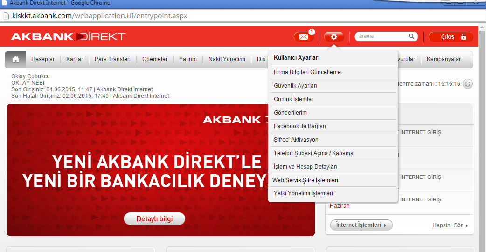
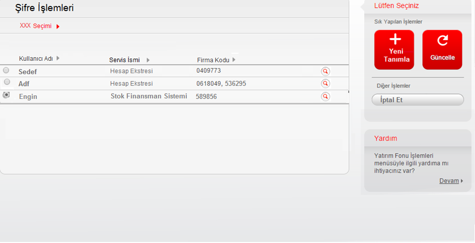
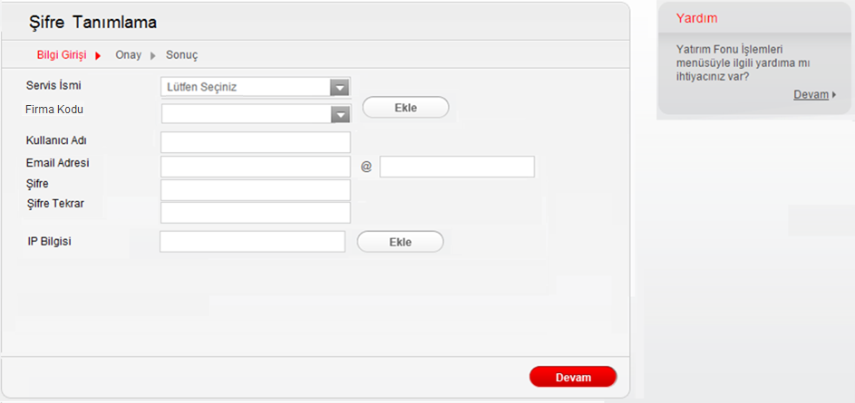
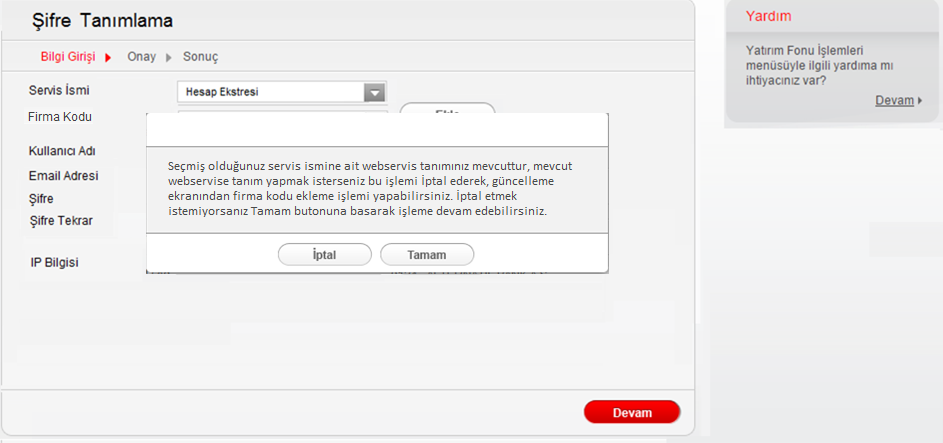
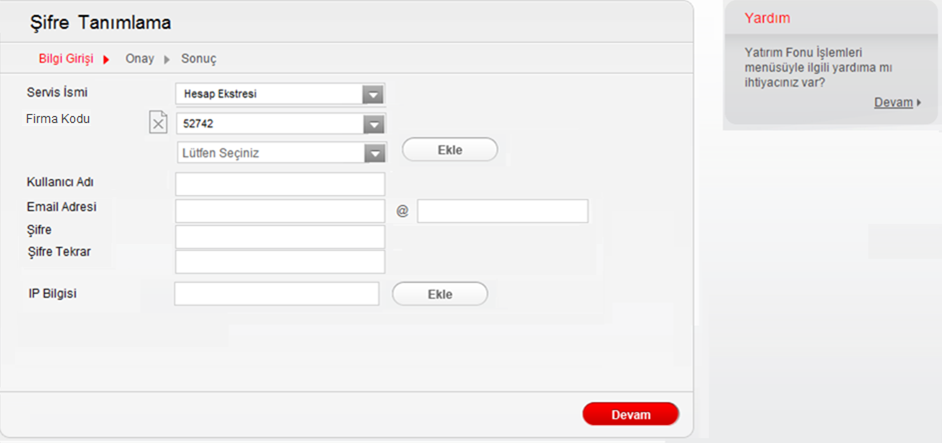
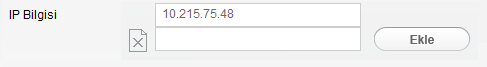

“Kullanıcı Ayarları” altına “Web Servis Şifre İşlemleri” menüsü eklenmiştir. “Web Servis Şifre İşlemleri” menüsü için yeni bir yetki tanımı yaptırılması gerekmektedir. Sadece bu menüye yetki tanımlanan kullanıcılar bu menü altındaki bütün fonksiyonları görüntüleyebilecek ve bu menü altındaki fonksiyonlarda işlem yapabilecektir.
Kullanıcı ayarlar menüsünden “Web Servis Şifre İşlemleri” alanına tıkladığında, kullanıcının mevcuttaki web servisleri listelenecektir. Kullanıcının hiç webservis tanımı yok ise ekranda aşağıdaki yazı yer alacaktır. Tıklayınız’a tıkladığında Yeni Tanım ekranına yönlendirme yapılacaktır. “Webservis tanımınız bulunmamaktadır, yeni tanım yapmak için tıklayınız” Her satırda yer alan büyüteç ikonu satırdaki firma kodlarına (URF’lere) bağlı hesap numaralarını göstermektedir. Eğer kullanıcı aynı webservis bilgilerini birden fazla firma kodu (URF) için kullanıyor ise bu kolonda virgül ile birden fazla firma kodu (URF) gösterimi sağlanacaktır.
Kullanıcı görüntüleme ekranından Yeni Tanımlama butonuna bastığında açılacak işlemdir.

Kullanıcının şifre tanımlarken ilk olarak kullanacağı nakit yönetimi ürününü seçmesi gerekmektedir. Bu
alandan aşağıdaki ürünler listelenecektir.
• Hesap Ekstresi
• Doğrudan Borçlandırma Sistemi
• Stok finansman sistemi
• TÖS Netsis Entegrasyonu
• ÇEK Netsis Entegrasyonu
Servis ismi seçildiğinde, kullanıcının mevcut webservis tanımları kontrol edilecektir. Eğer kullanıcının
yeni tanım ekranında seçtiği servis ismine tanımlı bir servis var ise ekranda;
“Seçmiş olduğunuz servis ismine ait webservis tanımınız mevcuttur, mevcut webservise tanım yapmak
isterseniz bu işlemi İptal ederek, güncelleme ekranından firma kodu ekleme işlemi yapabilirsiniz. İptal
etmek istemiyorsanız Tamam butonuna basarak işleme devam edebilirsiniz.”
Uyarısı verilecek, Tamam butonuna tıklanması durumunda ise tanımlama ekranında devam
edebilecektir.
TR:


Ekranda yer alan şifre adı, email adresi, şifre, şifre tekrar alanlarının kullanıcı tarafından doldurulması beklenmektedir.
Web Servis ekstre işlemleri için :
“Web Servis işlemleri için belirleyeceğiniz şifreniz 16 karakterden oluşmalı; büyük ve küçük harf ve
noktalama işareti içermelidir.”
E-Fatura için
“E-Fatura işlemleri için belirleyeceğiniz şifreniz 4 ile 10 karakter arasında olmalı; büyük,küçük
harf,noktalama işareti, sayı içermelidir.”
IP bilgisi alanını da kullanıcının manuel girmesi gerekmektedir. Maximum 3 IP adresi eklenebilmektedir.
Eğer kullanıcı birden fazla IP eklemek isterse IP bilgisi metninin yanındaki Ekle butonunu
kullanmalıdır. Böylelikle ikinci IP bilgisi Tmetin kutusu açılacaktır.
Apsiyon IP Bilgileri: 77.92.133.109 ve 91.93.86.130 dur.

Kullanıcı görüntüleme ekranından herhangi bir webservis bilgisini seçerek “Güncelle” butonuna bastığında
açılacak menüdür. Kullanıcı görüntüleme ekranından seçim yapmadan “Güncelle” butonuna basar ise
aşağıdaki hata mesajını alacaktır.
“Lütfen seçim yapınız.”
Kullanıcı güncelleme ekranında, seçtiği webservisie ait servis ismi ve firma kodu (URF) bilgisini
değiştirilemez olarak ekranda görebilecektir. Eğer birden fazla firma kodu (URF) var ise ekranda bunlar
da listelenecektir.
Seçilen menüden